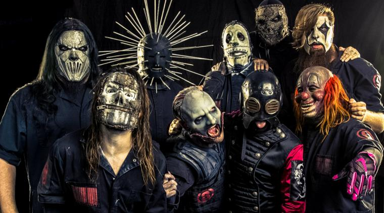

Bienvenidos
Elegimos este tema ya que el genero de la banda es el metal; y el metal y el gusto por el metal es algo que tenemos muy en comun:

Que es Slipknot
Slipknot es un grupo de metal que nació en Des Moines, Iowa, en 1995. Su sonido, enormemente influyente e imitado, ha sido definido a veces como metal alternativo, heavy metal o rap metal y destaca por mezclar elementos duros propios del death metal y otros muy melódicos. También son conocidos por sus electrizantes directos y por utilizar, en sus actuaciones, maquillajes grotescos y máscaras.